The Opportunity
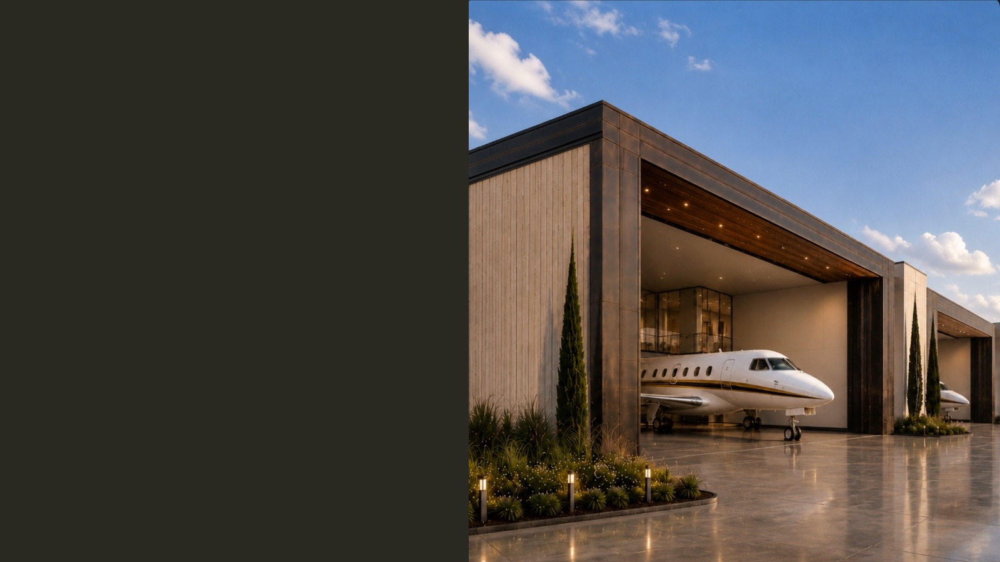
Some opportunities
come back around.
Not this one.
Welcome to The Landing at KLCI — the final airport-adjacent opportunity available for private hangar development at Laconia Municipal Airport.
Direct runway access. Full-service FBO support. A secure, gated environment built around a singular privilege: the freedom to arrive and depart completely on your own schedule.
Some opportunities come back around. Not this one. Welcome to The Landing at KLCI — the final airport-adjacent opportunity available for private hangar development at Laconia Municipal Airport. Direct runway access. Full-service FBO support. A secure, gated environment built around the freedom to arrive and depart completely on your own schedule.
Some opportunities
come back around.
Not this one.
Welcome to The Landing at KLCI — the final airport-adjacent opportunity available for private hangar development at Laconia Municipal Airport.
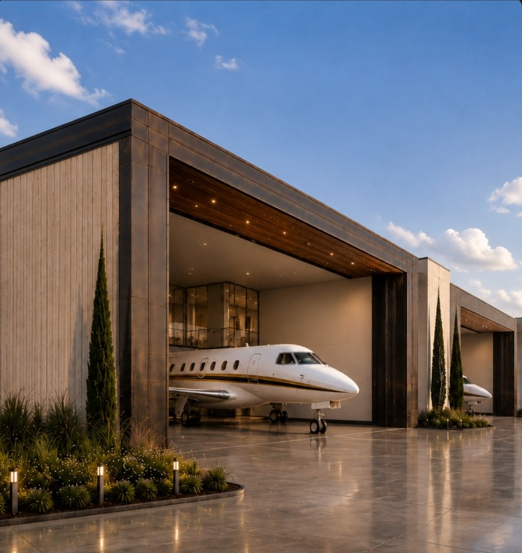
-
Direct Runway Access.
Taxi in. Close the door. You're home.
-
Full-Service FBO Support.
Fuel, concierge, and aircraft services designed for seamless ownership.
-
Secure. Gated. Private.
A protected environment where privacy is built in — not added on.
-
Freedom On Your Schedule.
Arrive and depart entirely on your own time.
Nine Hangars. One Vision.
Nine Hangars.
One Vision.
Only seven available
for private ownership.
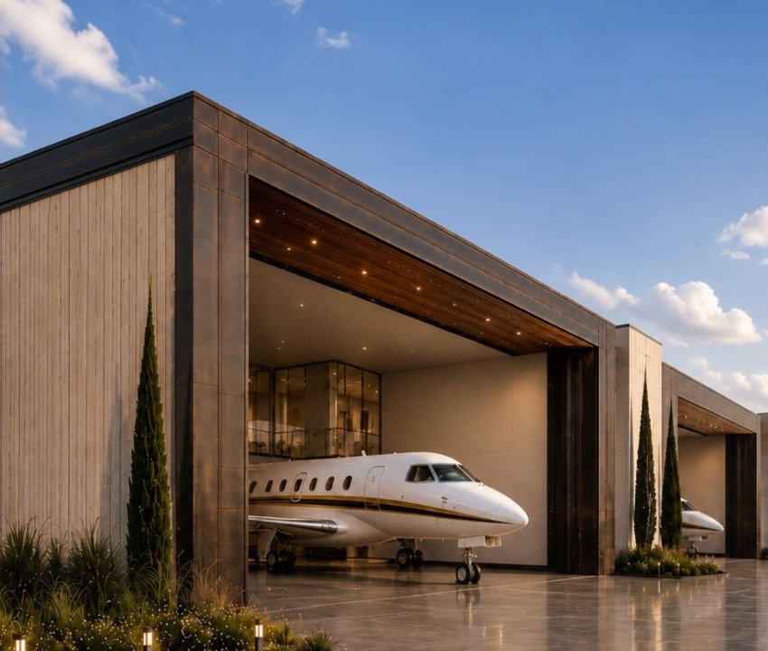
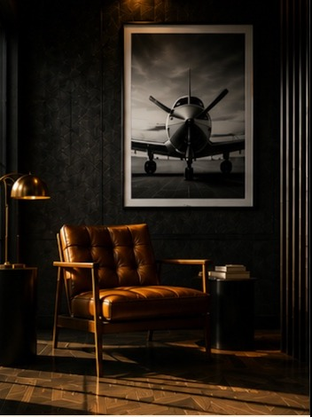
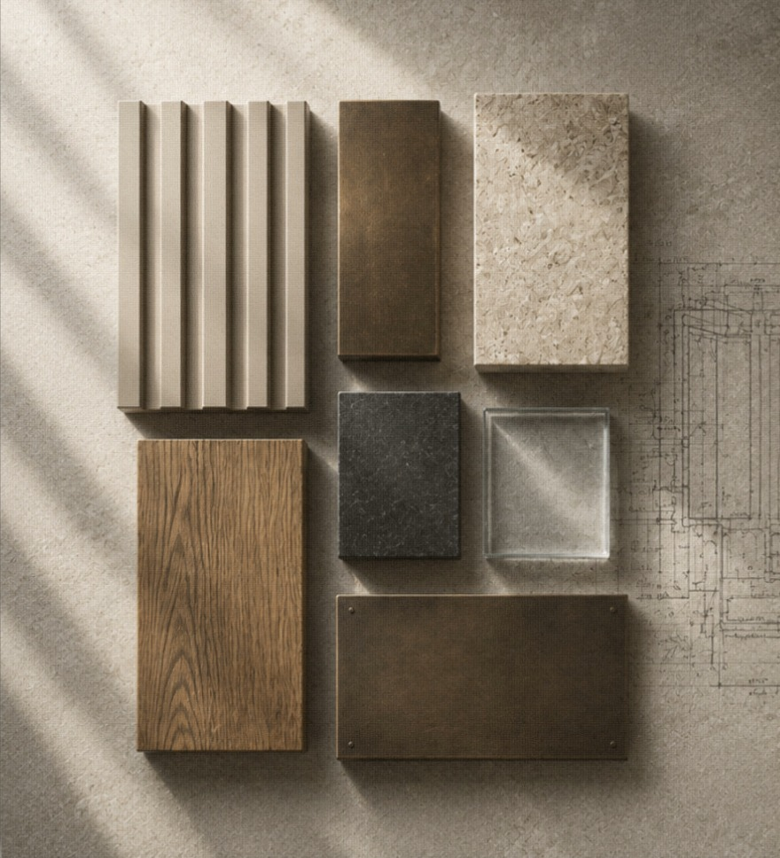
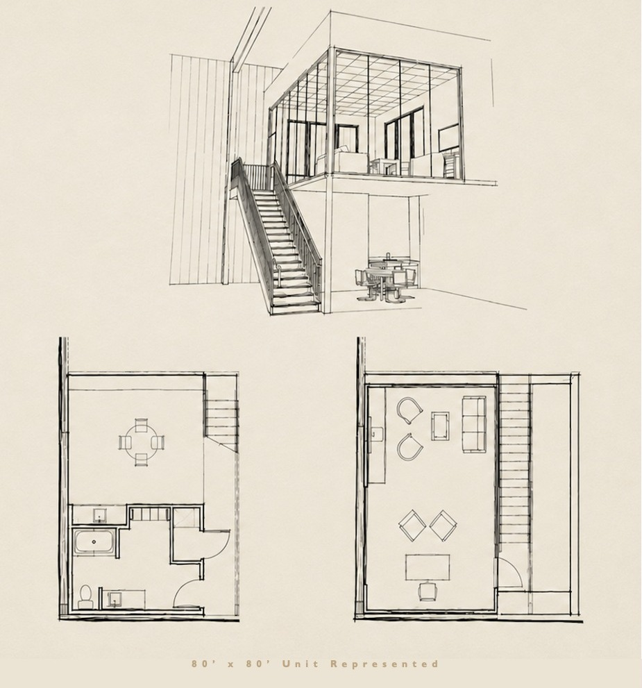
80' x 80' – 6 Units
- 79' x 25' hydraulic door
- Glass‑front mezzanine
- Viewrail staircase
- Expansive glazing
- Private owner's lounge
- Kitchenette
- Three‑quarter bath
60' x 65' – 3 Units
- 59' x 25' hydraulic door
- Smaller footprint
- Half bath
- Locker area
Nine hangars. One vision. Only seven available for private ownership. Six 80 by 80 foot units with 79 by 25 foot hydraulic aircraft doors, glass-front mezzanine, Viewrail staircase, expansive glazing, private owner lounge, kitchenette and three-quarter bath. Three 60 by 65 foot units with 59 by 25 foot hydraulic aircraft doors, smaller footprint, half bath and locker area. In aviation, the sky is limitless, but the real estate is not.
Nine hangars.
One vision.
Only seven available
for private ownership.
80' x 80' – 6 Units
79' x 25' hydraulic aircraft door. Glass-front mezzanine. Viewrail staircase. Expansive glazing. Private owner's lounge. Kitchenette. Three-quarter bath.
60' x 65' – 3 Units
59' x 25' hydraulic aircraft door. Smaller footprint. Half bath. Locker area.
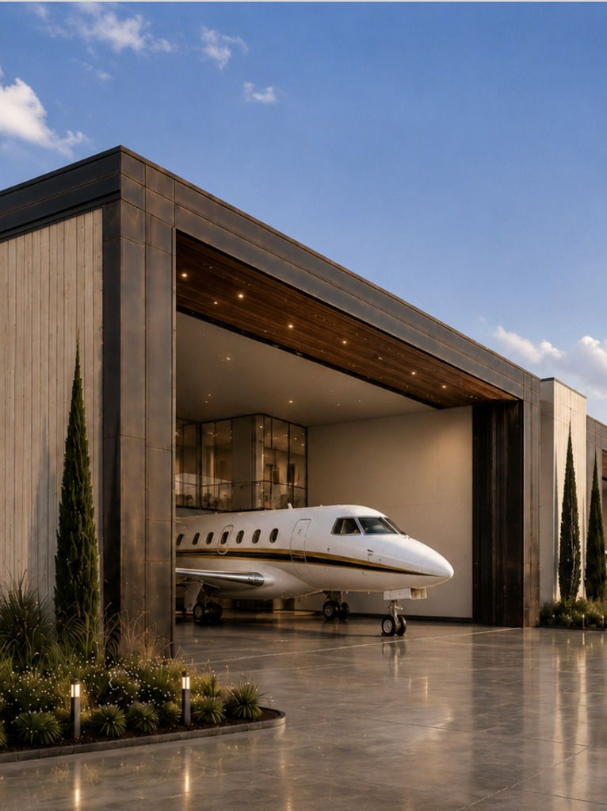
The Lakes Region
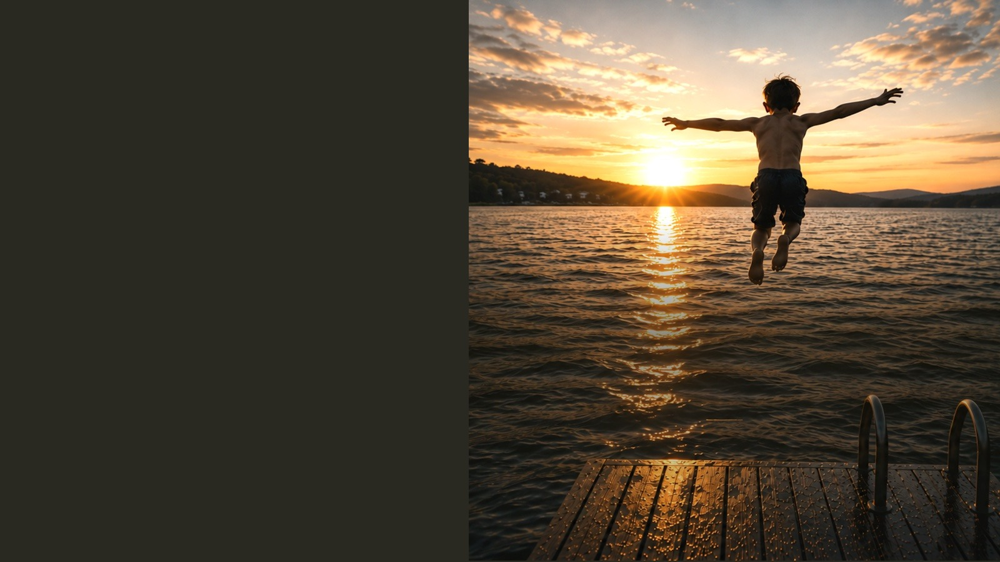
The Lakes Region
Minutes from Lake Winnipesaukee
and the White Mountains,
The Landing puts one of
New England's great four-season
destinations within easy reach.
Lake days and mountain mornings.
Golf, skiing, concerts at Bank NH Pavilion —
and weekends that have a way
of running long.
Because the childhood dream was
never about the airplane.
It was the freedom to fly.
Minutes from Lake Winnipesaukee and the White Mountains, The Landing puts one of New England's great four-season destinations within easy reach. Lake days and mountain mornings. Golf, skiing, concerts at Bank NH Pavilion — and weekends that have a way of running long. Because the childhood dream was never about the airplane. It was the freedom to fly.
The Lakes Region
Minutes from Lake Winnipesaukee and the White Mountains, The Landing puts one of New England's great four-season destinations within easy reach.
Lake days and mountain mornings. Golf, skiing, concerts at Bank NH Pavilion — and weekends that have a way of running long.
Because the childhood dream was never about the airplane.
It was the freedom to fly.
The Masterplan
The Masterplan
Thoughtfully positioned.
Purposefully connected.
9
Private Hangars
1–6
80' x 80'
Doors 79' x 25'
7–9
60' x 65'
Doors 59' x 25'
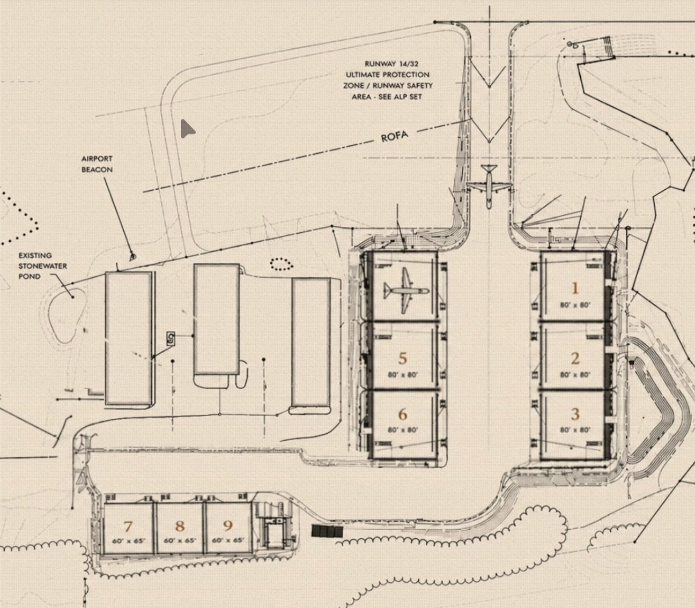
The Masterplan. Thoughtfully positioned. Purposefully connected. Nine private hangars. Units 1 through 6 are 80 by 80 feet with 79 by 25 foot doors. Units 7 through 9 are 60 by 65 feet with 59 by 25 foot doors.
The Masterplan
Thoughtfully positioned.
Purposefully connected.
9
Private Hangars
1–6
80' x 80'
Doors 79' x 25'
7–9
60' x 65'
Doors 59' x 25'
Designed for the Aircraft. Built for the Owner.
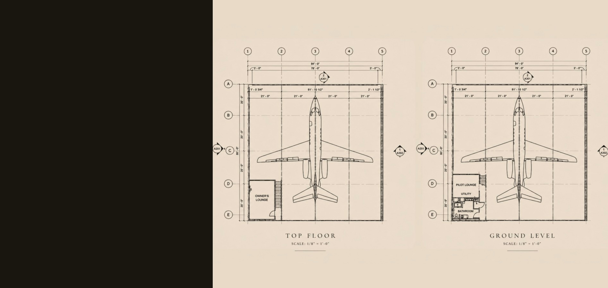
Designed for
the aircraft.
Built for
the owner.
Designed for the aircraft. Built for the owner. Top floor and ground-level hangar plans.
Designed for
the aircraft.
Built for
the owner.
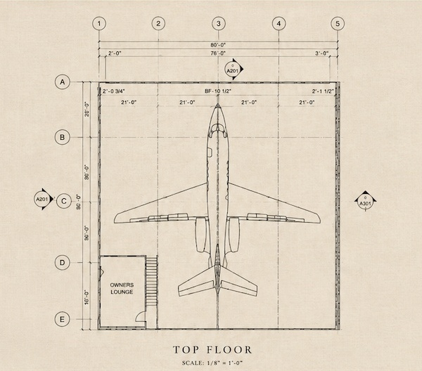
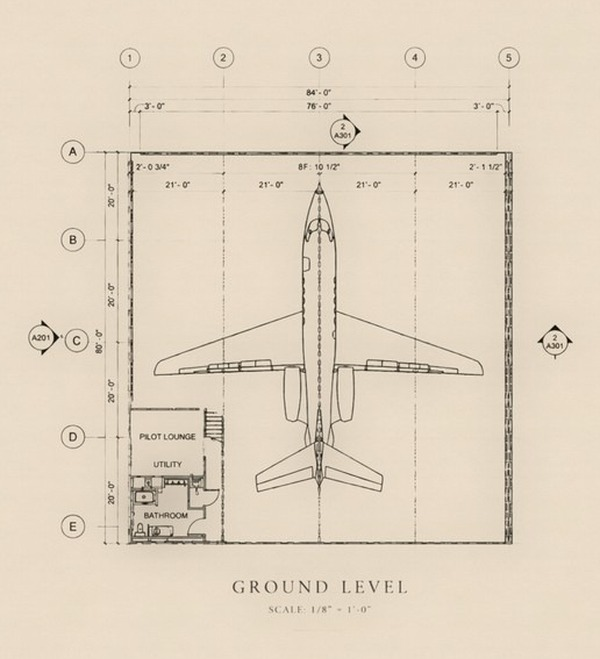
Milestones
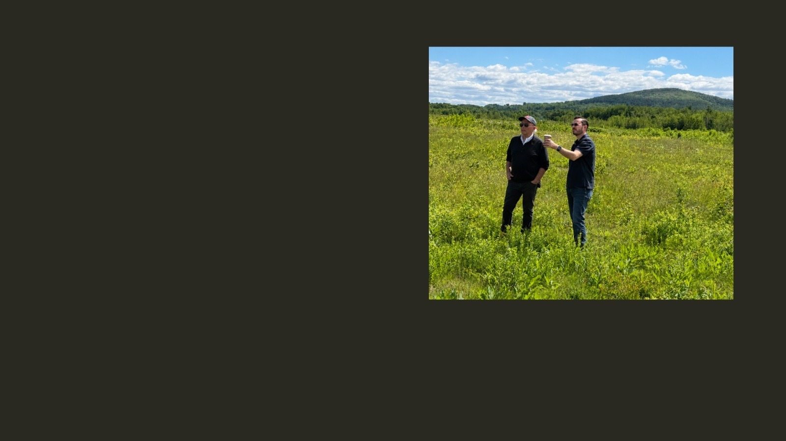
Milestones
-
June
2026 Plans & Permitting -
August
2026 Approvals Complete -
Fall
2026 Groundbreaking -
Summer
2027 First Arrivals
A Vision Takes Flight.
The airport approaches luxury builder Doug Beane. The need is clear: larger, premium private hangars.
*Photographed on site at KLCI
Milestones. Plans and permitting in June 2026. Approvals complete in August 2026. Groundbreaking in fall 2026. First arrivals in summer 2027. A vision takes flight. The airport approaches luxury builder Doug Beane. The need is clear: larger, premium private hangars.
Milestones
-
June
2026 Plans & Permitting -
August
2026 Approvals Complete -
Fall
2026 Groundbreaking -
Summer
2027 First Arrivals
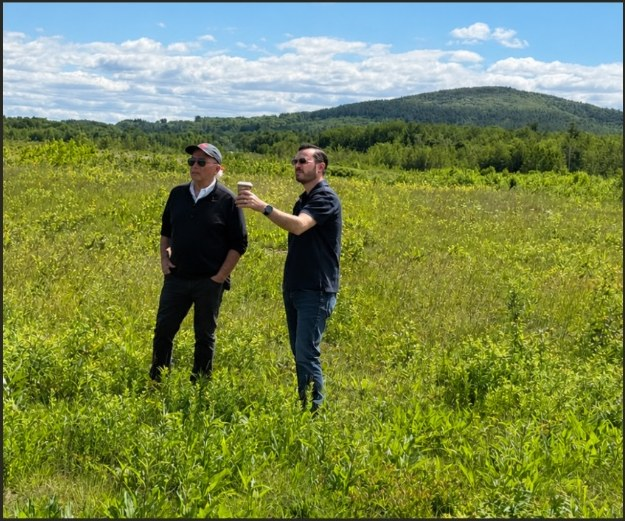
A Vision Takes Flight.
The airport approaches luxury builder Doug Beane. The need is clear: larger, premium private hangars.
*Photographed on site at KLCI
Ownership
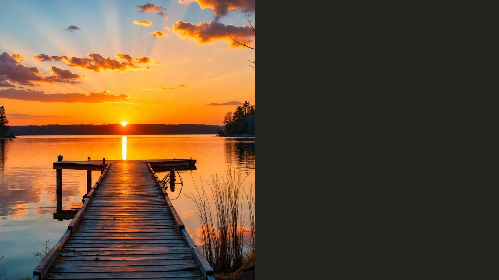
Ownership
One more log on the fire.
One more cast.
One more sunset over the lake.
Time is the one luxury
you never get back.
Sometimes the greatest gift
is not having to leave. Not yet.
Because the airplane gets you there.
Ownership gives you
the freedom to stay.
Ownership. One more log on the fire. One more cast. One more sunset over the lake. Time is the one luxury you never get back. Sometimes the greatest gift is not having to leave. Not yet. Because the airplane gets you there. Ownership gives you the freedom to stay.
Ownership
One more log on the fire.
One more cast.
One more sunset over the lake.
Time is the one luxury
you never get back.
Sometimes the greatest gift
is not having to leave. Not yet.
Because the airplane gets you there.
Ownership gives you
the freedom to stay.
Buyer Opportunities
In life, you will be remembered for a lot of things.
May “practical”
never be one of them.
Buyer Opportunities
For pricing details, private tours or future developments, please reach out to Chris Beane below:
In life, you will be remembered for a lot of things. May "practical" never be one of them. Buyer Opportunities. For pricing details, private tours or future developments, please contact Chris Beane, Head of Business Development, at chrisbeane@luxuryhangars.com.
In life, you will be remembered for a lot of things.
May “practical”
never be one of them.
Buyer Opportunities
For pricing details, private tours or future developments, please reach out to Chris Beane below:
Chris Beane
Head of Business Development